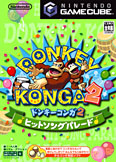
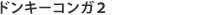
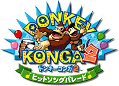
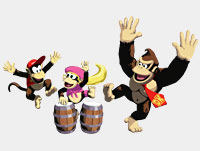
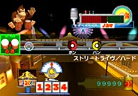
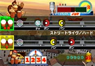
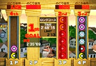

|

|  |
|  |
ゲームキューブソフト
発売日：2004年7月1日
希望小売価格：4,500円（税込）
ジャンル：リズムアクション
プレイ人数：１〜４人

|
 ソフト詳細ページへ ソフト詳細ページへ |
|
 |

| 新ハード"タルコンガ"の登場で話題をさらった音ゲー『ドンキーコンガ』が、新しくパワーアップしてカムバック！新曲や新たなモードが追加され、さらにワクワクの楽しみがギュッと詰まった新作に。部屋で黙々とプレイするより、やっぱりみんなでワイワイ騒いで遊びたい！この夏、あなたは誰とプレイする？ |
 |

リズムに乗り、タルコンガの左右と拍手を使い分ければ初心者さんでも簡単にプレイできることで大好評だった『ドンキーコンガ』。発売からかなり経っても、まだまだ楽しんでいるユーザーは多いはず。また、かなり上達したプレイヤーは続編に期待を寄せていたのでは？
今回リリースされる新作では、J-POPからアニソン、ＴＶ主題歌などからみんなが知っている曲を多数収録。なかには『ピクミン２』のCM曲『種のうた』もあるというので、楽しみ楽しみ！
基本的な操作方法は前作とまったく同じ。タルコンガの左右の打面＋手拍子という３種類の入力方法で遊びます。画面の音符に従いながらリズムに乗って、タイミングよく叩くのがコツ。もしやりづらいなと感じたら、何回か曲を聴いてなんとなくでも全体の構成を覚えてしまうのも手。あとはテンポの速すぎない曲を選んだり、繰り返し遊ぶことでだんだん慣れてくるはず。とにかく楽しく叩けば、クリアーしたも同然!?
さてほかにどこが新しくなったかというと、『シェア』や『アドリブ』といった新しい遊び方が追加されているところに注目。これまでよりもいっそう楽しくプレイするため、ほかの人も一緒に手拍子を叩いたり、気分に合わせてフリースタイルでプレイしたりと、より"音楽性"を重視したモードになっているよう。ゲームとしてスコアやパーフェクトを追求するより、単純に音楽とリズムを楽しみたい！っていう人には待ってましたと言いたくなる、嬉しい機能ですね。編集長はひそかにこういうのを待ってたんですよ。音楽はやっぱりノリがいちばん。嬉しいな〜。
ミニゲームも２つの新作が登場、プレイすればドンキーコンガのプレイが上達すること間違いなし。暑いからって家でじっとしているより、音楽と一緒にノリノリの夏を過ごしてみて！ |


 |
|
|
|
|